不等式
【同向不等式】
不等号相同的两个或几个不等式叫做同向不等式.例如: 2x ＋5 >3 与3x－2 >5 是同向不等式.
【异向不等式】
不等号相反的两个不等式叫做异向不等式.例如: 2x＋5 >3 与3x－2 <5 是异向不等式.
【不等式的性质】
定理1: a>b⇔b<a (对称性)；
定理2: a>b，b>c⇒a>c (传递性)；
定理3: a>b⇒a ＋c>b ＋c；
推论1: a ＋b>c⇒a>c－b；
推论2: a>b，c>d⇒a ＋c>b ＋d，
推论3: a>b，c>d⇒a－c>b－d；
定理4: a>b，c>0⇒ac>bc；
a>b，c<0⇒ac>bc；
推论1: a>b>0，c>d>0⇒ac>bd；
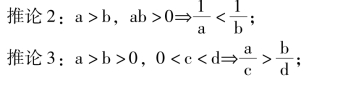
推论4: a>b>0⇒an>bn(n∈z，n>1)；
推论5: a>0，b>0 时，
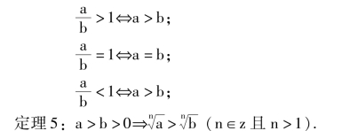
说明: 不等式的性质比较多，记忆时可按对称性，传递性、运算性质记忆，运算性质中又包括一个不等式的六种代数运算性质和两个不等式间的加、减、乘、除四种运算性质.
在应用不等式的性质解决问题时，一定要注意该性质成立的条件，否则结论将不一定正确.因此，在学习性质时，要求学生会举出反例说明每一个性质中条件存在的必要性，加深对性质的理解.
【含有绝对值不等式的性质】
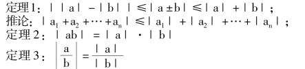
【平均不等式】
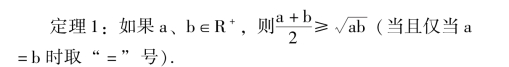
推论1: 如果a、b∈R，则a2＋b2≥2ab (当且仅当a＝b 时取“ ＝” 号).
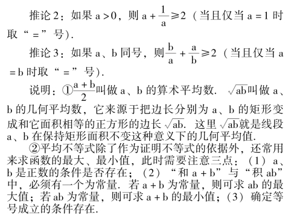
例 已知x，y 为正数，若2x ＋5y ＝20，求lgx ＋lgy的最大值，以及达到此最大值时，x、y 的值.
解∵x、y 是正数，
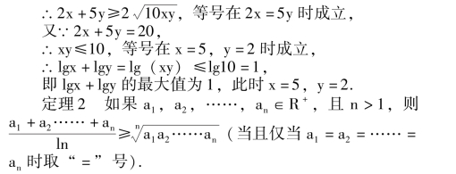
【比差法证明不等式】
由两个实数比较大小的定义可知，要比较不等号左、右两边的大小等价于研究左式减右式所得差的符号，因此“取差” 是不等式证明的基本方法.比差法证题的基本步骤是取差、变形、定号.常用的变形手段是因式分解或配方，目的是为了便于判断式子取值的符号.
【比商法证明不等式】
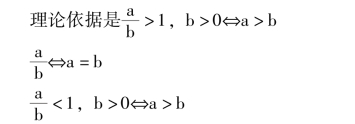
步骤是: 作商；变形；判断商比1 大还是比1 小.
一般对两边是指数式的不等式采用作商比较.
【分析法证明不等式】
由所证命题的结论出发，逐步逆找结论成立的充分条件，直至找到明显成立的不等式为止，这种证明不等式的方法叫做分析法.如果在逆找过程中，每一步都是可逆的(就是任何相邻的两个论断都是互为充要条件的)，那么这种的分析法我们还称它为“逆证法”.
例 已知a，b 为任意实数.
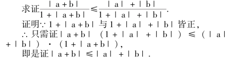
上述不等式显然成立，故原不等式成立.
【反证法证明不等式】
反证法是一种间接证明方法，它是依据形式逻辑中的“排中律” (即两个互相矛盾的判断不能都是假的) 进行的，论题与矛盾论题是两个互相矛盾的判断，根据排中律，如能证明矛盾论题是假的，那么论题必然是真的.反证法的证题过程是: 先否定原命题的结论部分(即作出和结论相反的假设)，经过推理导出矛盾(可与已知公理、定理矛盾，或与题中已知矛盾，或与临时假设矛盾，或自相矛盾)，从而否定结论的反面，因而原结论是正确的.
【综合法证明不等式】
从已知条件出发，经过正确推理，逐步导出欲证结论为止的证明方法叫做综合法.综合法证明不等式的步骤是: 从已知条件出发，先确定一个或几个恰当的正确的不等式，以它为起点，以要证的结论为目标，根据不等式的性质逐步导出要证的结论.
例 已知a ＋b ＋c>0，
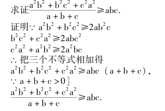
【数学归纳法证明不等式】
主要适用于关于自然数的不等式的证明.
【判别式法证明不等式】
主要适用于二次不等式及与二次式有关的不等式.
例 求证a2＋b2＋c2≥ab ＋bc ＋ac.
证明 设y ＝a2－ (b ＋c) a ＋b2＋c2－bc，
则△＝ (b ＋c)2－4 (b2＋c2－bc) ＝－3 (b－c)2≤0，
又∵a2的系数为正，∴y≥0，即a2＋b2＋c2≥ab ＋bc＋ac.
【放缩法证明不等式】
放缩法是证明不等式所特有方法，下面介绍几种常用的放缩办法.
(1) 分式的放缩对于分子分母均取正值的分式，如需放大，则只要把分子放大或分母缩小即可；如需缩小，则只要把分子缩小或分母放大即可.还可利用真分数的分子和分母加上同一个正数，则分数值变大；假分数的分子和分母加上同一个正数，则分数值变小来进行放缩.
例 若a，b，c，d 是正数.
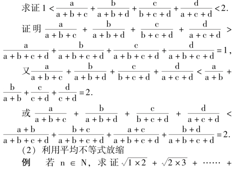
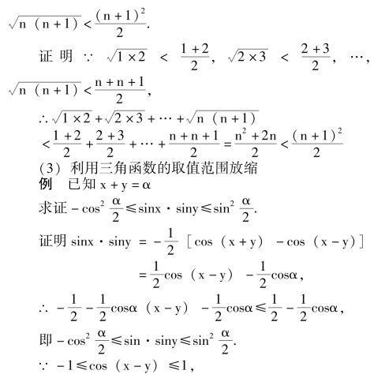
【一元高次不等式】
含有一个未知数，并且未知数的最高次数高于二次的不等式，叫做一元高次不等式.它的一般形式是:
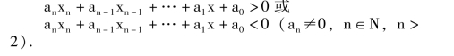
【无理不等式】
在被开方式中含有未知数的不等式叫无理不等式.无理不等式解法的主要思想是利用不等式乘方性质，去掉根号化为有理不等式和直接利用算术根的定义来解.
例 解下列不等式
解解原不等式等价于解下列不等式组.
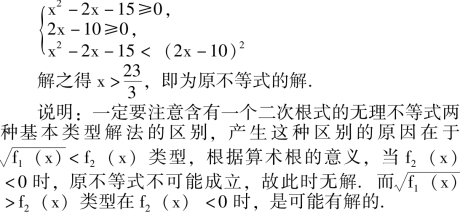
【指数不等式】
指数中含有未知数的不等式叫指数不等式.指数不等式解法的主要思想是: 在同底的条件下，利用指数函数的增减性转化为代数不等式来解.
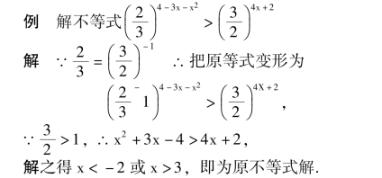
【对数不等式】
在真数中含有未知数的不等式叫做对数不等式.对数不等式解法的主要思想基本上与指数不等式解法的思想一致，即在同底的条件下，利用对数函数的增减性转化为代数不等式来解.所不同的是对数不等式要在使对数不等式有意义的条件下求不等式的解，因此对数不等式往往转化为不等式组来求解.
例 解不等式lg (x2 ＋2x－3) <lg (x ＋17).
解 只需解下列不等式组
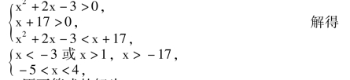
∴原不等式的解为1 <x<4.
例 解不等式log2x＋2(x2－3x－4) >1.
解先把不等式化为同底，得
log2x＋2(x2－3x－4) >log2x＋2(2x ＋2)，
∵对数的底数和真数中都含有未知数，∴根据对数函数的增减性，分2x ＋2 >1 和0 <2x ＋2 <1 两种情况来解.原不等式同解于下列两个不等式组:
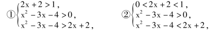
解①得x>6；不等式组②无解.故原不等式的解为x>6.
【绝对值不等式】
含有绝对值符号的不等式叫做绝对值不等式.绝对值符号中含有未知数的不等式解法的主要思想，是利用绝对值的定义转化为不含绝对值的不等式来解.为了解题方便，经常直接利用与绝对值不等式等价的不含绝对值的不等式来解，即｜x ｜ <a⇔－a <x <a；｜x ｜ >a⇔x < －a或x>a；b< ｜x ｜ <a⇔－a<x< －b 或b<x<a.